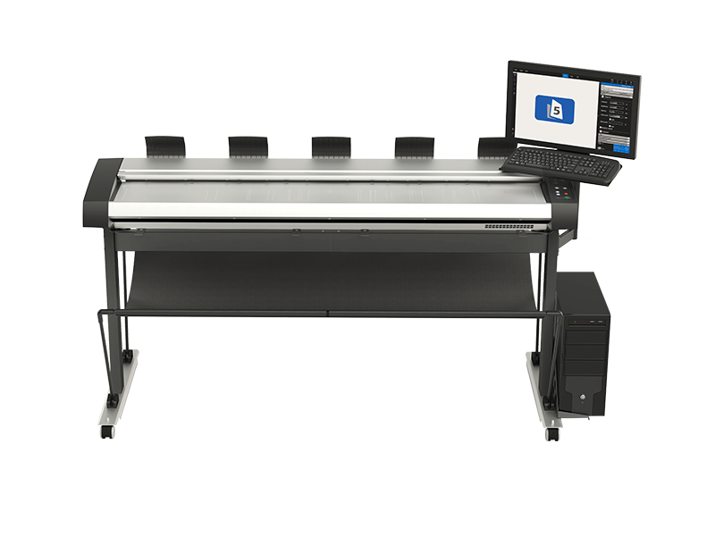
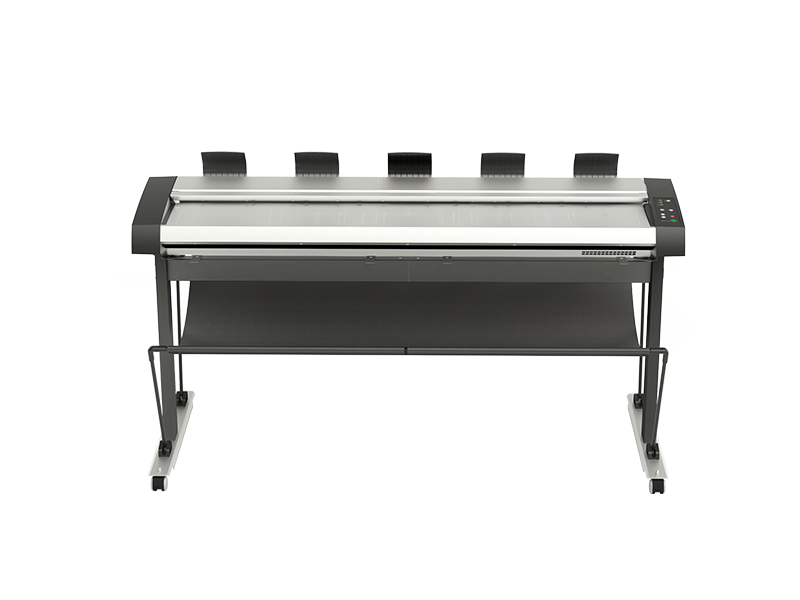
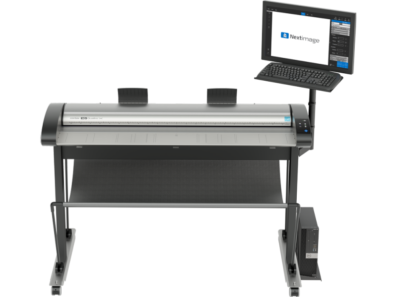
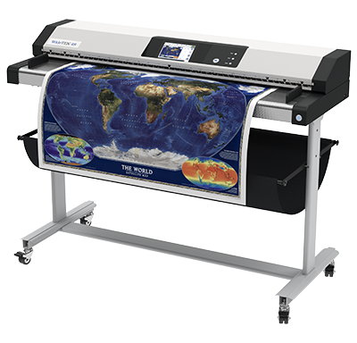
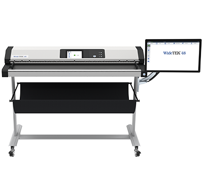

Escáneres de planos
Escaner para la digitalización de material de gran formato, planos, estudios geológicos, telas.

Contex HD Ultra X

Contex IQ Quattro X

Widetek 48
Contex HD UltraX


| Características / modelo | HD ULTRA X 6050 | HD ULTRA X 6090 | HD ULTRA X 4250 | HD ULTRA X 4290 | HD ULTRA X 3650 | HD ULTRA X 3690 | |
|---|---|---|---|---|---|---|---|
| Anchura máxima de escaneado | 60 pulgadas (1524 mm) | 42 pulgadas (1067 mm) | 36 pulgadas (914 mm) | ||||
| Altura de trabajo | 36,3/37,3/38,3 pulgadas (922/947/972 mm) | ||||||
| VELOCIDAD DE ESCANEADO2 (IN/S) Con la anchura máxima de escaneado | |||||||
| Color RGB 200 ppp | 8,9 | 17,8 | 8,9 | 17,8 | 8,9 | 17,8 | |
| La velocidad de color se puede actualizar | |||||||
| Escala de grises/monocromático 200 ppp | 17,8 | ||||||
| PRODUCTIVIDAD (DOCUMENTOS/HORA) Escaneado por lotes durante 60 minutos. Incluye el tiempo de carga y expulsión del papel. Medido en cantidad de escaneados completos | |||||||
| Tamaño Arch E, retrato, monocromático/color RGB, 200 ppp | 875/519 | 875 | 875/519 | 875 | 875/519 | 875 | |
| Tamaño Arch E, paisaje, monocromático/color RGB, 200 ppp | 1055/642 | 10903td> | |||||
| Tamaño A0, retrato, monocromático/color RGB, 200 ppp | 903/537 | 903 | 903/537 | 903 | 903/537 | 903 | |
| Tamaño A0, paisaje, monocromático/color RGB, 200 ppp | 1057/693 | 1057 | |||||
| Anchura máxima del soporte | 61,8 pulgadas (1570mm) | 43,3 pulgadas (1100mm) | |||||
| Resolución óptica | 1200 ppp | ||||||
| Resolución máxima | 9600 ppp | ||||||
| Cámaras CCD | CCD de color lineal 7 x 4 (RGB y gris) | CCD de color lineal 5 x 4 (RGB y gris) | |||||
| Profundidad de foco | 0,3 pulgadas (7 mm) | ||||||
| Grosor máximo del soporte | 0,6 pulgadas (15 mm) | ||||||
| Número total de píxeles | 299 040 píxeles | 213 600 píxeles | |||||
| Precisión | 0,6 pulgadas (15 mm) | ||||||
| Captura de datos (color/monocromático | Color 48 bits / escala de grises 16 bits | ||||||
| Espacio de color | Adobe RGB, Dispositivo RGB, RAW RGB, sRGB | ||||||
| Conectividad | USB 3.0 con xDTR3, Ethernet gigabit con xDTR2.5 | ||||||
Contex IQ QuattroX

| Características / modelo | IQ QUATTRO X 3650 | IQ QUATTRO X 3690 | IQ QUATTRO X 4450 | IQ QUATTRO X 4490 | ||
|---|---|---|---|---|---|---|
| Anchura máxima de escaneado | 914 mm | 1118 mm | ||||
| Anchura máxima del medio | 956 mm | 1194 mm | ||||
| Velocidad de escaneado1 (mm/s). Documentos de 91 cm de ancho. | ||||||
| Color RGB 200 ppp | 226,06 | 452,12 | 226,06 | 452,12 | ||
| Color con posibilidad de ampliación hasta 452,12 mm/s | ||||||
| Escala de grises/monocromático 200 ppp | <452.12 | 452.12 | ||||
| PRODUCTIVIDAD (DOCUMENTOS/HORA) Escaneado por lotes durante 60 minutos. Incluye el tiempo de carga y expulsión del papel. Medido en cantidad de escaneados completos | ||||||
| Tamaño Arch E, retrato, monocromático/color RGB, 200 ppp | 523 | 856 | 523 | 856 | ||
| Especificaciones | ||||||
| Grosor máximo del soporte | 2 mm para documentos flexibles | |||||
| Resolución óptica | 1200 ppp | |||||
| Resolución máxima | 9600 ppp | |||||
| Número total de píxeles | 54.000 píxeles | 64.800 píxeles | ||||
| Tecnologías CIS clave de Contex | CleanScan, SIGMA, CFR | |||||
| Justificación de documentos | Carga central flexible debido al tamaño automático | |||||
| Precisión | 0,1 % +/- 1 píxel | |||||
| Captura de datos (color/monocromático | Color 48 bits / escala de grises 16 bits | |||||
| Espacio de color | Adobe RGB, Dispositivo RGB, RAW RGB, sRGB | |||||
| Conectividad | USB 3.0 con xDTR3, Ethernet gigabit con xDTR2.5 | |||||
ImageAccess Widetek 48


| Document | |
|---|---|
| Maximum Document Size | 1270 mm (50 inch) width. Information about the maximum scan length in the technical specification. |
| Maximum Scan Width | max. 1220 mm (48 inch) |
| Autoformat Size Recognition | yes |
| DIN Format | DIN A5 – DIN A0 |
| ANSI Format | Legal, US E |
| User Defined Format | yes |
| Document Thickness | max. 2.5 mm (0.1 in.) |
| Output | |
| Scanner Resolution | 1200 x 1200 dpi (optionally 9600 x 9600 dpi interpolated) |
| Optical Resolution | 1200 x 600 dpi |
| Pixel Dimension | 9.3 x 9.3 µm |
| Paper Path | Face up, Front entry, Front or rear exit |
| Scan Speed Color | 200 dpi – 18.4 m/min (12.1 inch/s) 300 dpi – 12.3 m/min (8.1 inch/s) 600 dpi – 6 m/min (4 inch/s) 1200 dpi – 1.5 m/min (1 inch/s) |
| Scan Speed BW | Same as 24 bit Color |
| Color Depth | 36 bit color, 12 bit grayscale |
| Scan Output | 24 bit color, 8 bit grayscale, bitonal, enhanced halftone |
| File Formats | PDF, PDF/A, JPEG, PNM, TIFF uncompressed, TIFF G4 (CCITT), Multipage PDF, TIFF |
| Accuracy | |
| Scan direction | ± 0.08% across 36 inch scanning width |
| Transport direction | ± 0.08% with new transport rollers |
| Technical Specifications | |
| Computer | 64 bit Linux, Intel i3, quad core processor, 8 Gigabyte RAM, 320GB HDD for extra large jobs |
| Interface | 1 GBit Fast Ethernet with TCP/IP based Scan2Net(R) interface |
| Camera | 4x Tri-color CCD camera, 90,000 pixels, encapsulated and dust-proof |
| Light Source | Two lamps with 204 white LEDs each, no IR/UV emission |
| Lamp Life Time | 50,000 h (typ.) |
| Dimensions | |
| Dimensions Scanner | 228 x 1425 x 507 mm (9 x 56.1 x 20 inch) (H x W x D) |
| Weight Scanner | ~53 kg (117 lbs.) |
| Electrical Specifications | |
| Electrical Connection | 100-240 V AC, 47 – 63 Hz (external power supply, complies with ECO standard CEC level V) |
| Power Consumption | 0.5 W (Sleep) / 4.8 W (Standby) / 46 W (Ready to scan) / 86 W (Scanning) |
| Ambient Conditions | |
| Operating Temp | 5 to 40 °C, 40 to 105 °F |
| Rel Humidity | 20 to 80 % (non-condensing) |
| Noise | < 35 dB(A) (Scanning) / < 25 dB(A) (Standby) |